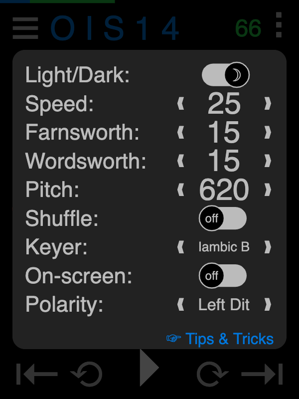

Use the app to practice copying and sending CW/Morse Code!
Press the phrase (red) to hear the characters sounded.

Press play (▸) to sound each phrase; automatically advancing through the lesson. Phrases are hidden until sounded, then spoken and shown.

ⓘ Tip: Press the phrase while playing to toggle hiding.
Navigate the phrases within each lesson by pressing left (⟲) and right (⟳) icons or with arrow keys on a keyboard. Navigate entire lessons by pressing left (⇤) and right (⇥) icons or with shift-arrow keys on a keyboard.
The current lesson (blue) and a phrase countdown (green) are shown along with a thin progress bar along the top.
Select from a menu of lessons by pressing the (blue) title.

Select from avalable sets of content by pressing the menu (☰) icon.

Press the ellipsis (⁝) icon to change settings.
The Light/Dark (☼/☽) switch changes the color scheme throughout.

The Speed setting determines the rate in words per minute (WPM) at which code is send and received. More precisely, it sets the unit "dit length." Dahs then are 3 dits long and space between elements is 1 dit. Normally, space between letters is 3 dits and between words is 7 dit (however, see the Farnsworth and Wordsworth settings below).
The canonical "word" is "PARIS" which is 50 dits long - including element, letter and trailing word spacing.